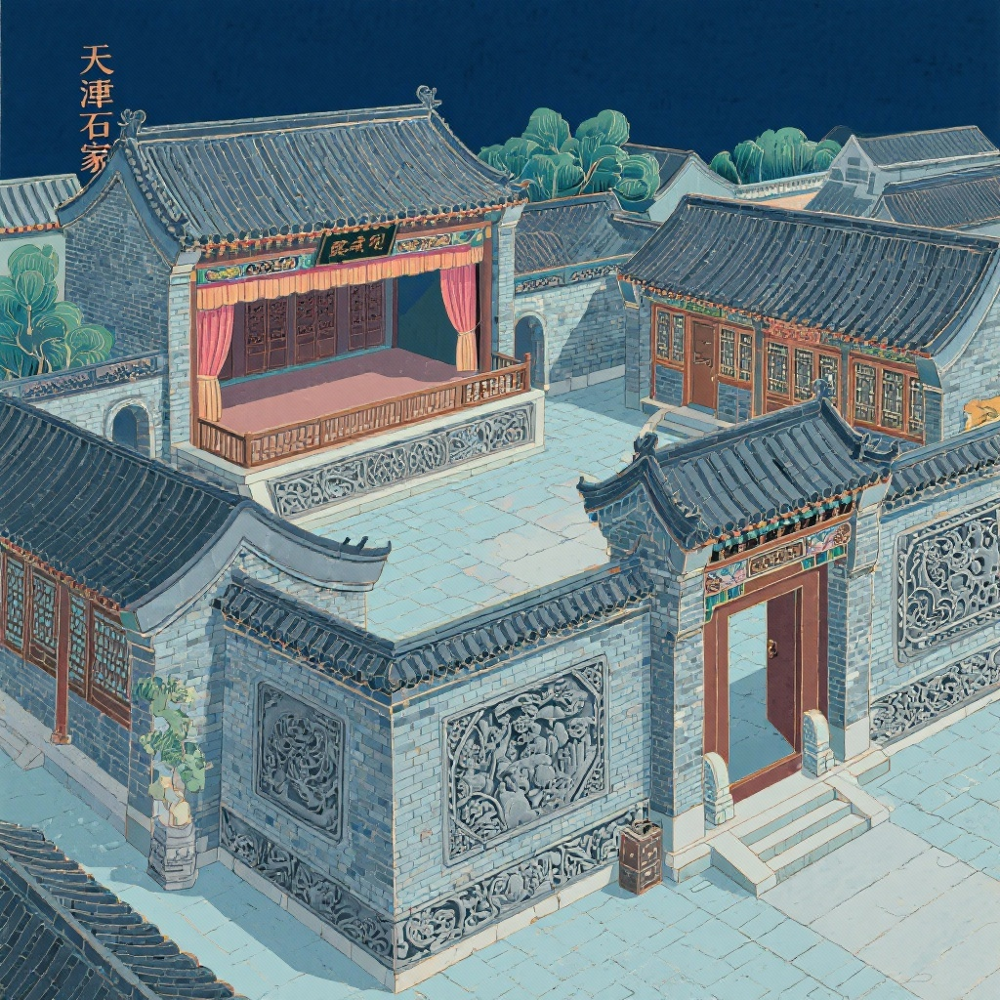

石家大院
清代津门八大家之一的宅院，被誉为"华北第一宅"。精美的砖雕、木刻和戏楼 展现了传统建筑艺术的精妙，是北方民居建筑的珍贵遗产。
清代
建筑年代
华北第一宅
美誉称号
三绝
建筑特色
院落布局
建筑格局
正房
东厢房
西厢房
倒座/戏楼
大门
点击房间了解功能布局
建筑特色
四合院布局
采用传统的四合院布局，体现了中国古代民居的建筑智慧，既保证了私密性，又营造了和谐的居住环境。
轴线对称
建筑沿中轴线对称分布，体现了中国传统文化中的秩序美学，彰显了主人的身份地位。
功能分区
各功能区域分布合理，正房为长辈居所，厢房为晚辈住房，倒座为客厅和书房，体现了传统的家庭伦理观念。
建筑三绝

戏楼
精美的戏楼建筑，体现了清代戏曲文化的繁荣，是天津地区现存最早的戏剧演出场所之一。
点击查看大图 →

砖雕
精湛的砖雕工艺，题材丰富多样，包含花鸟、人物、吉祥图案等，展现了民间艺术的魅力。
点击查看大图 →

杨柳青年画
国家级非物质文化遗产，以细腻的笔触、吉祥的寓意闻名世界，是中国传统民间艺术的瑰宝。
点击查看大图 →
艺术展示
砖雕装饰
题材丰富，工艺精湛
木雕装饰
技艺精湛，栩栩如生
年画艺术
色彩鲜艳，寓意吉祥

建筑群
布局严谨，气势恢宏
历史文化
历史沿革
清代兴建
石家大院建于清代，是津门八大家之一石家的宅院。石家是天津著名的商业家族，在盐业、粮食贸易等方面有着重要影响。
建筑特色
大院占地面积广阔，建筑布局严谨，装饰精美，体现了清代民居建筑的最高水平，被誉为"华北第一宅"。
现代保护
现已成为重要的文化遗产保护单位，向世人展示着清代民居建筑的艺术魅力和深厚的历史文化内涵。
文化价值
建筑艺术
石家大院集中体现了清代民居建筑的艺术成就，从布局设计到装饰工艺，都展现了古代建筑师的卓越智慧。
民俗文化
大院承载着丰富的民俗文化信息，反映了清代天津地区的社会生活和家庭伦理观念。
艺术传承
精美的砖雕、木雕和年画艺术，体现了中国传统民间艺术的高超技艺，是珍贵的非物质文化遗产。